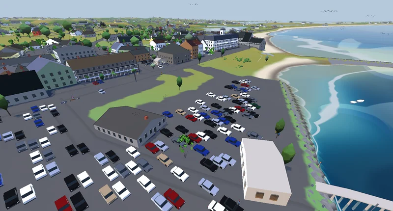
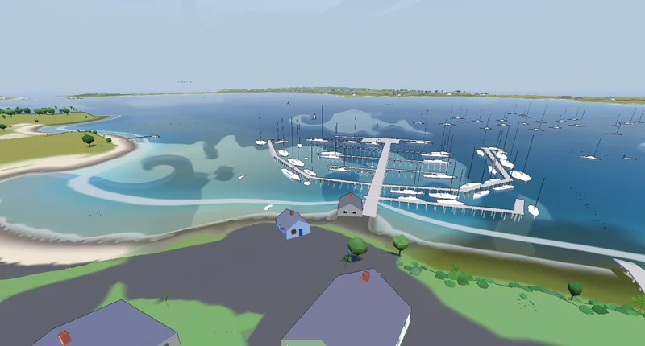
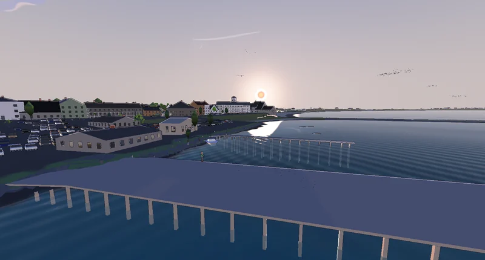
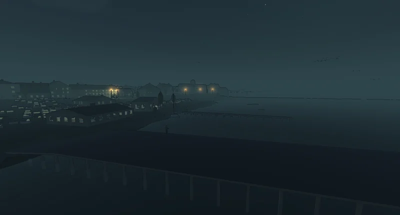
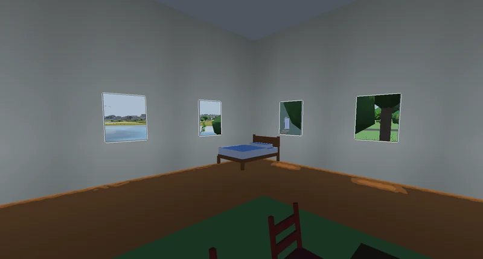
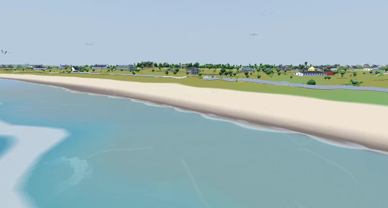

heightfield terrain engine · real-world landscape at 1:1
The engine that draws the ground in Block Island Simulator. It starts from a real survey of the island and draws every hill, bluff and pond exactly where it is, so you can walk on the actual landscape. Nothing is made up or sculpted by hand.
A C99 heightfield terrain engine by magmacrunch media. daffodil draws real ground: it reads a heightfield built offline from LiDAR elevation data, reprojected, tiled and written as raw float32 meters, then renders it faithfully and lets you walk on it.
Nothing is generated or sculpted. The shape of the ground comes from the survey, and the engine's job is to reproduce it. It was built for Block Island Simulator, which is the island below.
daffodil has two C99 siblings. magnolia runs the Wii games. hologram makes the opposite trade: it traces light exactly, dispersion and polarization included, across a few dozen analytic surfaces, where daffodil rasterizes millions of triangles of ground and gets the light approximately right.
Every picture here is straight out of the game, drawn for the date and hour it was given. A set of fixed views is drawn again on every push to the game and compared with saved copies, so a change that alters the picture gets caught.
The game's tools/shots.py photographs fixed views headless under software GL,
each one a place something once went wrong. It compares them with committed baselines, within
a tolerance on the whole frame and on its worst 32 px square, and checks what each view drew
against a budget. The baselines are small and in the plain style; the pictures here are
the default toon style at 1600 wide, with the on-screen key hints cropped off.
Budgets from those baselines, terrain and paving triangles and trees drawn: Old Harbor 1,020,416 · 601,796 · 573. The marina view 1,048,832 · 189,942 · 645. The town at night 963,328 · 634,082 · 489.
The ground is a chunked level of detail at 1:1, a tenfold triangle reduction overall: 1.87 M in the worst measured view against 18.7 M with every tile at full resolution. 79,208 trees stand where the survey measured them, drawn instanced and tinted onto the ground itself once they are too far away to draw.

The town as it stands, streets cut through one paved sheet. The buildings are solid, and you can walk into them.

The marina on Great Salt Pond. Water depth, the tide and the shoreline are the hardest things in the engine to get right.

The sun sets where it really sets for that date and hour, and the light goes with it.

The same spot two hours later. The moon and 8,404 stars are in their real places, the two lighthouses flash their published patterns, and the lit windows hold steady.

Go through a door and the room is there, with furniture, and the real island out of the window.

The beach, the grass above it and the houses behind, each where the survey found it.
Runs on Windows, Mac, Linux and Raspberry Pi 4 and 5.
terrain chunked heightfield at 2 m posts, LOD by distance, with seams that are provably invisible. shadows cascaded shadow maps, with an atlas that defaults smaller on GLES3 than the floor allows. vegetation instanced and impostored by range. audio mixer, sample bank, WAV loading and a small synth.
capture reads a frame back on every backend, which is what makes a visual claim checkable at all. gles_budget audits the whole scene against GLES3's guaranteed minimums, with no GPU and no display.
The game it was built for, and its own editor.
daffodil doesn't make the landscape; it only draws it. The game's own tools turn the survey into tiles of ground heights, in metres above sea level, and the engine reads those tiles exactly as they were written, so nothing can be lost or rescaled between the two.
daffodil does not produce heightfield data; it reads it. The producing pipeline lives in the consuming game's repository, in Python, and the two halves agree through a manifest file rather than through shared code. A tile is raw little-endian float32, row-major, and its sample values are meters above local mean sea level.
DAFFODIL_TILE_SAMPLES 257 // 512/2 + 1
DAFFODIL_TILE_METRES 512.0f
DAFFODIL_POST_METRES 2.0fThere's no height scale constant and no decode step: reading a tile is one fread
into a float*. A scale constant is a thing two languages can disagree about, and
this way they cannot. The +1 in the sample count is load-bearing too, because it
makes adjacent tiles share their edge row exactly.
The engine's demands are checked against OpenGL ES 3.0's guaranteed minimums instead of whatever GPU is to hand. Fitting inside the floor means fitting on any conformant device, so a failure on real hardware points at the driver. The audit runs with no GPU and no display, which means it runs over ssh.
It says nothing about speed. Not one of those limits is a rate, and the island reported
ok on every line while drawing at three frames a second on the one GLES3 GPU it
has met. Fitting the limits and running fast are separate questions, and the audit answers
only the first.
Windows / D3D11 · Linux / OpenGL · macOS / Metal · Raspberry Pi 4 and 5 / GLES3. One rasterizer, four backends, and a frame can be read back on all of them.
After the Daffodil cabin at Twin Maples on Block Island, which is the first ground it renders, and after Juanito Thompson's “Daffodil & Sweet Pea”.
PolyForm Noncommercial 1.0.0 · Copyright 2026 magmacrunch media. Any noncommercial purpose is permitted, and commercial use is reserved to magmacrunch media. Vendored sokol headers, by Andre Weissflog, keep their zlib license.
daffodil is developed in-house and is not publicly distributed.
For source access, licensing, or anything else, email info@magmacrunch.com.